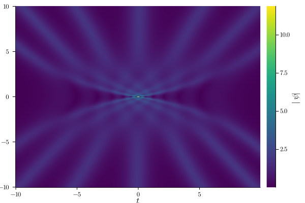
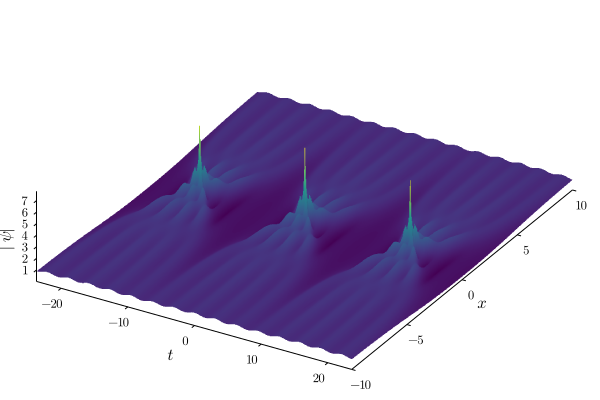
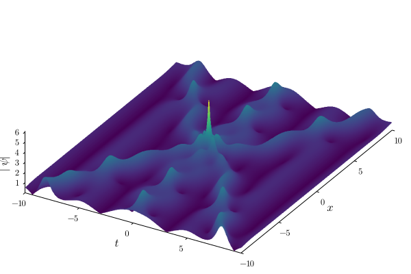
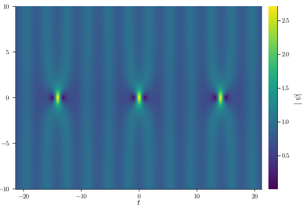

Darboux Transformation Examples
Example 1: 7 Soliton Collision
xᵣ = -10=>10
T = 20
seed = "0"
box = Box(xᵣ, T, Nₓ=500, Nₜ = 500)
λ = [-0.45 + 0.775im, -0.35 + 0.8im, -0.25 + 0.825im, 0.85im, 0.25 + 0.875im, 0.35 + 0.9im, 0.45 + 0.925im]
xₛ = [0.0, 0.0, 0.0, 0.0, 0.0, 0.0, 0.0]
tₛ = [0.0, 0.0, 0.0, 0.0, 0.0, 0.0, 0.0]
calc = Calc(λ, tₛ, xₛ, seed, box)
solve!(calc)
heatmap(calc)[ Info: Initializing Box with 1 period(s) and dx = 0.0, Nₜ = 500. [ Info: Longitudinal range is [-10, 10], transverse range is [-10.0, 10.0) [ Info: Done computing t, x, ω [ Info: Calculating Lax pair generating functions rₙₚ(x,t) and sₙₚ(x,t) for (n,p) = (7,1) [ Info: Calculating Lax pair generating functions rₙₚ(x,t) and sₙₚ(x,t) for (n,p) = (6,1) [ Info: Calculating Lax pair generating functions rₙₚ(x,t) and sₙₚ(x,t) for (n,p) = (5,1) [ Info: Calculating Lax pair generating functions rₙₚ(x,t) and sₙₚ(x,t) for (n,p) = (4,1) [ Info: Calculating Lax pair generating functions rₙₚ(x,t) and sₙₚ(x,t) for (n,p) = (3,1) [ Info: Calculating Lax pair generating functions rₙₚ(x,t) and sₙₚ(x,t) for (n,p) = (2,1) [ Info: Calculating Lax pair generating functions rₙₚ(x,t) and sₙₚ(x,t) for (n,p) = (1,1) [ Info: Calculating Lax pair generating functions rₙₚ(x,t) and sₙₚ(x,t) for (n,p) = (1,2) [ Info: Calculating Lax pair generating functions rₙₚ(x,t) and sₙₚ(x,t) for (n,p) = (2,2) [ Info: Calculating Lax pair generating functions rₙₚ(x,t) and sₙₚ(x,t) for (n,p) = (1,3) [ Info: Calculating Lax pair generating functions rₙₚ(x,t) and sₙₚ(x,t) for (n,p) = (3,2) [ Info: Calculating Lax pair generating functions rₙₚ(x,t) and sₙₚ(x,t) for (n,p) = (2,3) [ Info: Calculating Lax pair generating functions rₙₚ(x,t) and sₙₚ(x,t) for (n,p) = (1,4) [ Info: Calculating Lax pair generating functions rₙₚ(x,t) and sₙₚ(x,t) for (n,p) = (4,2) [ Info: Calculating Lax pair generating functions rₙₚ(x,t) and sₙₚ(x,t) for (n,p) = (3,3) [ Info: Calculating Lax pair generating functions rₙₚ(x,t) and sₙₚ(x,t) for (n,p) = (2,4) [ Info: Calculating Lax pair generating functions rₙₚ(x,t) and sₙₚ(x,t) for (n,p) = (1,5) [ Info: Calculating Lax pair generating functions rₙₚ(x,t) and sₙₚ(x,t) for (n,p) = (5,2) [ Info: Calculating Lax pair generating functions rₙₚ(x,t) and sₙₚ(x,t) for (n,p) = (4,3) [ Info: Calculating Lax pair generating functions rₙₚ(x,t) and sₙₚ(x,t) for (n,p) = (3,4) [ Info: Calculating Lax pair generating functions rₙₚ(x,t) and sₙₚ(x,t) for (n,p) = (2,5) [ Info: Calculating Lax pair generating functions rₙₚ(x,t) and sₙₚ(x,t) for (n,p) = (1,6) [ Info: Calculating Lax pair generating functions rₙₚ(x,t) and sₙₚ(x,t) for (n,p) = (6,2) [ Info: Calculating Lax pair generating functions rₙₚ(x,t) and sₙₚ(x,t) for (n,p) = (5,3) [ Info: Calculating Lax pair generating functions rₙₚ(x,t) and sₙₚ(x,t) for (n,p) = (4,4) [ Info: Calculating Lax pair generating functions rₙₚ(x,t) and sₙₚ(x,t) for (n,p) = (3,5) [ Info: Calculating Lax pair generating functions rₙₚ(x,t) and sₙₚ(x,t) for (n,p) = (2,6) [ Info: Calculating Lax pair generating functions rₙₚ(x,t) and sₙₚ(x,t) for (n,p) = (1,7) /home/runner/.julia/packages/GR/G9I5v/src/../deps/gr/bin/gksqt: error while loading shared libraries: libQt5Widgets.so.5: cannot open shared object file: No such file or directory connect: Connection refused GKS: can't connect to GKS socket application GKS: Open failed in routine OPEN_WS GKS: GKS not in proper state. GKS must be either in the state WSOP or WSAC in routine ACTIVATE_WS

Example 2: Fifth Order Maximal Intensity Breather
xᵣ = -10=>10
λ₁ = 0.98im
λ, T, Ω = params(λ = λ₁)
box = Box(xᵣ, T, Nₓ=500, Nₜ = 500, n_periods = 3)
λ = λ_maximal(λ₁, 5) # array of 5 eigenvalues
xₛ = [0.0, 0.0, 0.0, 0.0, 0.0]
tₛ = [0.0, 0.0, 0.0, 0.0, 0.0]
seed = "exp"
calc = Calc(λ, tₛ, xₛ, seed, box)
solve!(calc)
surface(calc)[ Info: Passed λ=0.0 + 0.98im, computed T = 15.787097084991364 and Ω = 0.3979949748426484 [ Info: Initializing Box with 3 period(s) and dx = 0.0, Nₜ = 500. [ Info: Longitudinal range is [-10, 10], transverse range is [-23.680645627487046, 23.680645627487046) [ Info: Done computing t, x, ω [ Info: Calculating Lax pair generating functions rₙₚ(x,t) and sₙₚ(x,t) for (n,p) = (5,1) [ Info: Calculating Lax pair generating functions rₙₚ(x,t) and sₙₚ(x,t) for (n,p) = (4,1) [ Info: Calculating Lax pair generating functions rₙₚ(x,t) and sₙₚ(x,t) for (n,p) = (3,1) [ Info: Calculating Lax pair generating functions rₙₚ(x,t) and sₙₚ(x,t) for (n,p) = (2,1) [ Info: Calculating Lax pair generating functions rₙₚ(x,t) and sₙₚ(x,t) for (n,p) = (1,1) [ Info: Calculating Lax pair generating functions rₙₚ(x,t) and sₙₚ(x,t) for (n,p) = (1,2) [ Info: Calculating Lax pair generating functions rₙₚ(x,t) and sₙₚ(x,t) for (n,p) = (2,2) [ Info: Calculating Lax pair generating functions rₙₚ(x,t) and sₙₚ(x,t) for (n,p) = (1,3) [ Info: Calculating Lax pair generating functions rₙₚ(x,t) and sₙₚ(x,t) for (n,p) = (3,2) [ Info: Calculating Lax pair generating functions rₙₚ(x,t) and sₙₚ(x,t) for (n,p) = (2,3) [ Info: Calculating Lax pair generating functions rₙₚ(x,t) and sₙₚ(x,t) for (n,p) = (1,4) [ Info: Calculating Lax pair generating functions rₙₚ(x,t) and sₙₚ(x,t) for (n,p) = (4,2) [ Info: Calculating Lax pair generating functions rₙₚ(x,t) and sₙₚ(x,t) for (n,p) = (3,3) [ Info: Calculating Lax pair generating functions rₙₚ(x,t) and sₙₚ(x,t) for (n,p) = (2,4) [ Info: Calculating Lax pair generating functions rₙₚ(x,t) and sₙₚ(x,t) for (n,p) = (1,5) /home/runner/.julia/packages/GR/G9I5v/src/../deps/gr/bin/gksqt: error while loading shared libraries: libQt5Widgets.so.5: cannot open shared object file: No such file or directory connect: Connection refused GKS: can't connect to GKS socket application GKS: Open failed in routine OPEN_WS GKS: GKS not in proper state. GKS must be either in the state WSOP or WSAC in routine ACTIVATE_WS

Example 3: 3 Soliton Collision on a $cn$ background
xᵣ = -10=>10
T = 20
box = Box(xᵣ, T, Nₓ=500, Nₜ = 500, n_periods = 1)
λ = [-0.3+0.85im, 0.9im, 0.3+0.95im]
xₛ = [0.0, 0.0, 0.0]
tₛ = [0.0, 0.0, 0.0]
seed = "cn"
calc = Calc(λ, tₛ, xₛ, seed, box, m = 0.5)
solve!(calc)
surface(calc)[ Info: Initializing Box with 1 period(s) and dx = 0.0, Nₜ = 500. [ Info: Longitudinal range is [-10, 10], transverse range is [-10.0, 10.0) [ Info: Done computing t, x, ω [ Info: Calculating Lax pair generating functions rₙₚ(x,t) and sₙₚ(x,t) for (n,p) = (3,1) [ Info: Calculating Lax pair generating functions rₙₚ(x,t) and sₙₚ(x,t) for (n,p) = (2,1) [ Info: Calculating Lax pair generating functions rₙₚ(x,t) and sₙₚ(x,t) for (n,p) = (1,1) [ Info: Calculating Lax pair generating functions rₙₚ(x,t) and sₙₚ(x,t) for (n,p) = (1,2) [ Info: Calculating Lax pair generating functions rₙₚ(x,t) and sₙₚ(x,t) for (n,p) = (2,2) [ Info: Calculating Lax pair generating functions rₙₚ(x,t) and sₙₚ(x,t) for (n,p) = (1,3) /home/runner/.julia/packages/GR/G9I5v/src/../deps/gr/bin/gksqt: error while loading shared libraries: libQt5Widgets.so.5: cannot open shared object file: No such file or directory connect: Connection refused GKS: can't connect to GKS socket application GKS: Open failed in routine OPEN_WS GKS: GKS not in proper state. GKS must be either in the state WSOP or WSAC in routine ACTIVATE_WS

Example 4: First Order Breather matched to a $dn$ Background
xᵣ = -10=>10
m = 2/5
λ = λ_given_m(m, q=4)
λ, T, Ω = params(λ = λ, m=m)
box = Box(xᵣ, T, Nₓ=500, Nₜ = 500, n_periods = 3)
λ = λ_maximal(λ, 1, m=m)
xₛ = [0.0]
tₛ = [0.0]
seed = "dn"
calc = Calc(λ, tₛ, xₛ, seed, box, m=m)
solve!(calc)
heatmap(calc)[ Info: Passed λ=0.0 + 0.8588568879615993im, computed T = 14.220154971930045 and Ω = 0.4418506914715286 [ Info: Initializing Box with 3 period(s) and dx = 0.0, Nₜ = 500. [ Info: Longitudinal range is [-10, 10], transverse range is [-21.330232457895068, 21.330232457895068) [ Info: Done computing t, x, ω [ Info: Calculating Lax pair generating functions rₙₚ(x,t) and sₙₚ(x,t) for (n,p) = (1,1) /home/runner/.julia/packages/GR/G9I5v/src/../deps/gr/bin/gksqt: error while loading shared libraries: libQt5Widgets.so.5: cannot open shared object file: No such file or directory connect: Connection refused GKS: can't connect to GKS socket application GKS: Open failed in routine OPEN_WS GKS: GKS not in proper state. GKS must be either in the state WSOP or WSAC in routine ACTIVATE_WS
